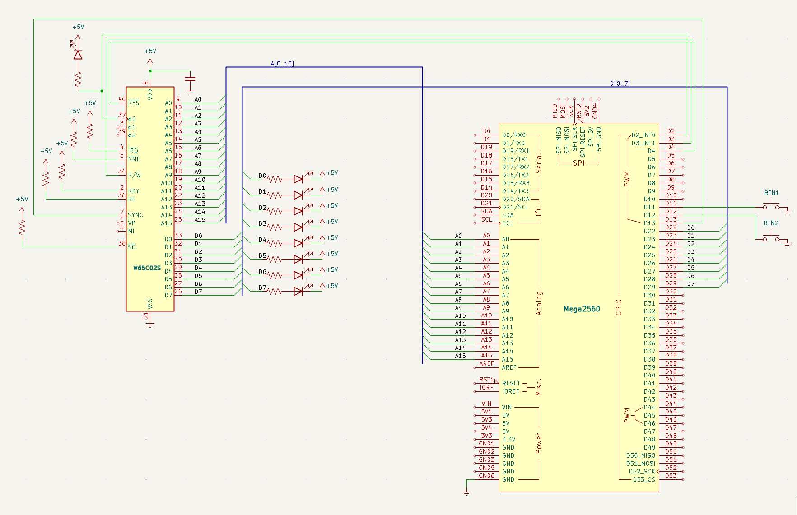

Steg 4 — manuell stegning
Mål
I steg 3 körde CPU:n fritt i en NOP-loop — kul att se, men svårt att felsöka. Nu kopplar vi in två tryckknappar och SYNC-signalen för att kunna styra exekveringen manuellt. Det här är en av de stora fördelarna med W65C02S: eftersom den är statisk CMOS kan klockan stoppas hur länge som helst.
Knapp 1 (klocksteg): varje tryckning ger en enda klockcykel. Perfekt för att se vad som händer på bussen i ultrarapid.
Knapp 2 (instruktionssteg): kör klockan tills CPU:n signalerar att en ny instruktion har hämtats. SYNC-pinnen (pin 7) går HÖG vid varje opcode fetch. Vi pulserar klockan tills SYNC går hög — då vet vi att CPU:n är i början av nästa instruktion.
Kodmässigt byter vi ut den automatiska loop() mot knappläsning med debounce (50 ms). Arduinons INPUT_PULLUP gör att vi slipper externa pull-up-motstånd — knappen kopplas direkt mellan pinne och GND.
Nya komponenter
Plocka fram dessa ur komponentlådan. Inga överraskningar — bara det som tillkommer i detta steg.
| Antal | Komponent |
|---|---|
| 2 | Tryckknappar |
| 1 | Kopplingstråd (SYNC → D13) |
Kopplingsschema
Här ser du hela kopplingen på en bild — alla komponenter och ledningar precis som de ska sitta på kopplingsdäcket.

Kopplingar
Alla kopplingar för detta steg — från strömmatning till signaler. Varje pinne, vart den går, och varför.
| Pin | Signal | Kopplas till | Varför |
|---|---|---|---|
| 8 | VDD | +5V | Strömmatning — CPU:ns driftspänning |
| 21 | VSS | GND | Systemjord — sluten krets |
| 37 | PHI2 | Arduino D2 | Klockingång — Arduino skickar fyrkantsvåg |
| 2 | RDY | +5V via 10kΩ | Ready — HÖG = CPU får köra. Utan denna stannar CPU:n |
| 4 | /IRQ | +5V via 10kΩ | Interrupt request — HÖG = inget avbrott |
| 6 | /NMI | +5V via 10kΩ | Non-maskable interrupt — måste vara HÖG |
| 36 | BE | +5V via 10kΩ | Bus Enable — HÖG = bussarna aktiva. Utan denna är CPU:n bortkopplad! |
| 38 | /SO | +5V via 10kΩ | Set Overflow — avaktiverad |
| 40 | /RESET | Arduino D4 | Kontrollerad reset — Arduino håller CPU:n i reset tills vi är redo |
| 9–16 | A0–A7 | Arduino A0–A7 | Låga adressbyte — läses via PORTF |
| 17–20, 22–25 | A8–A15 | Arduino A8–A15 | Höga adressbyte — läses via PORTK |
| 34 | R/W | Arduino D3 | HÖG = CPU läser, LÅG = CPU skriver. Arduino måste veta detta |
| 33 | D0 | Arduino D22 via 100Ω | Databit 0 (LSB) |
| 32 | D1 | Arduino D23 via 100Ω | Databit 1 |
| 31 | D2 | Arduino D24 via 100Ω | Databit 2 |
| 30 | D3 | Arduino D25 via 100Ω | Databit 3 |
| 29 | D4 | Arduino D26 via 100Ω | Databit 4 |
| 28 | D5 | Arduino D27 via 100Ω | Databit 5 |
| 27 | D6 | Arduino D28 via 100Ω | Databit 6 |
| 26 | D7 | Arduino D29 via 100Ω | Databit 7 (MSB) |
| 7 | SYNC | Arduino D13 | HÖG = CPU:n hämtar första byten av ny instruktion |
Arduino-kod
I steg 3 körde CPU:n fritt i en loop — spännande men omöjligt att felsöka. Nu ger vi oss själva full kontroll över exekveringen med två fysiska knappar. Det här är en av de stora fördelarna med W65C02S: eftersom kretsen är statisk CMOS kan klockan stoppas hur länge som helst — minuter, timmar, dagar — utan att processorn tappar sitt interna tillstånd. Vi kan stega genom programmet i vår egen takt.
SYNC — processorns "nu börjar jag"-signal
CPU:ns pin 7 (SYNC) är en av de mest användbara signalerna på hela kretsen. Den går HÖG under den klockcykel då processorn hämtar första byten av en ny instruktion (opcode fetch). Varje gång du ser SYNC tändas vet du att CPU:n precis har påbörjat nästa instruktion — oavsett om det är en enkel NOP eller en komplex adresseringsmod. SYNC är hemligheten bakom instruktionsstegningen.
Två knappar, två olika beteenden
Koden ändrar bara loop() och lägger till några nya pinkonstanter — allt annat är
oförändrat från steg 3. Så här fungerar knapparna:
- Knapp 1 (D11) — klocksteg: varje tryckning ger exakt en klockcykel. Du ser en ny rad i serieövervakaren för varje tryck. Perfekt för att inspektera bussen i ultrarapid.
- Knapp 2 (D12) — instruktionssteg: pulserar klockan tills SYNC går hög. Då vet vi att CPU:n är i början av nästa instruktion. En enda tryckning kan generera flera klockcykler (t.ex. 4 cykler för en NOP), men stannar alltid på en instruktionsgräns.
Debounce — att hantera kontaktstudsar
När du trycker på en mekanisk knapp studsar metallkontakterna mikroskopiskt — en enda tryckning kan
generera dussintals snabba på/av-signaler. Utan debounce skulle CPU:n ta flera steg per tryck.
Lösningen är enkel: delay(50) efter att knappen detekterats, vänta på att den släpps,
och delay(50) igen. INPUT_PULLUP gör att Arduinons inbyggda pull-up-motstånd
används — knappen kopplas direkt mellan pinne och GND, inga externa motstånd behövs.
Vad som är nytt jämfört med steg 3
SYNC-pinnen kopplas in på D13. loop() ändras från en enkel pulse()-loop till
knappläsning med debounce. Instruktionsstegningen (do { pulse(); } while (!digitalRead(SYNC)))
är en av de smartaste kodraderna i hela projektet — den låter dig kliva genom ditt program instruktion
för instruktion, precis som en debugger, fast i hårdvara.
// ==============================================================
// Steg 4 — manuell stegning med knappar
// ==============================================================
// Två tryckknappar ger full kontroll över exekveringen:
// Knapp 1 (D11): en klockcykel per tryck
// Knapp 2 (D12): kör tills CPU:n påbörjar nästa instruktion (SYNC)
// W65C02S är statisk CMOS — klockan kan stoppas hur länge som helst.
#include <Arduino.h>
// --- Pindefinitioner ---
#define PHI2 2 // Arduino D2 → CPU pin 37 (klocka)
#define RESB 4 // Arduino D4 → CPU pin 40 (reset)
#define RWB 3 // Arduino D3 → CPU pin 34 (Read/Write)
#define SYNC 13 // Arduino D13 → CPU pin 7 (opcode fetch-indikator)
#define BTN_CLK 11 // Knapp 1: en klockcykel (D11 → GND, INPUT_PULLUP)
#define BTN_INSTR 12 // Knapp 2: en instruktion (D12 → GND, INPUT_PULLUP)
#define CLOCK_HZ 500 // Klockfrekvens i Hz
#define CLOCK_DELAY (1000 / (CLOCK_HZ * 2)) // ms per klockfas
// --- Minnesarrayer ---
uint8_t ram[1024]; // $0000–$03FF
uint8_t vectors[6]; // $FFFA–$FFFF
// --- read_mem() — slå upp minnesvärde ---
uint8_t read_mem(uint16_t addr) {
if (addr >= 0xFFFA && addr <= 0xFFFF) return vectors[addr - 0xFFFA];
if (addr < 1024) return ram[addr];
return 0xEA; // NOP — ofarlig fallback
}
// --- write_mem() — spara minnesvärde ---
void write_mem(uint16_t addr, uint8_t val) {
if (addr >= 0xFFFA && addr <= 0xFFFF)
{ vectors[addr - 0xFFFA] = val; return; }
if (addr < 1024) ram[addr] = val;
}
// --- pulse() — en klockcykel med minnesemulering ---
void pulse() {
digitalWrite(PHI2, LOW);
delay(CLOCK_DELAY);
uint16_t a = (PINK << 0) | (PINF << 8);
bool rw = digitalRead(RWB);
// Styr databussen: ut vid läsning, tri-state vid skrivning
if (rw) { DDRA = 0xFF; PORTA = read_mem(a); }
else { DDRA = 0x00; }
digitalWrite(PHI2, HIGH);
delay(CLOCK_DELAY);
if (!rw) write_mem(a, PINA);
// Diagnostik
Serial.print(rw ? "R" : "W");
Serial.print(" $");
Serial.println(a, HEX);
}
// --- setup() — konfigurera pinnar och ladda NOP-program ---
void setup() {
Serial.begin(115200);
pinMode(PHI2, OUTPUT);
pinMode(RESB, OUTPUT);
pinMode(RWB, INPUT);
pinMode(SYNC, INPUT); // SYNC = HÖG när CPU hämtar ny opcode
pinMode(BTN_CLK, INPUT_PULLUP); // Intern pull-up, knapp till GND = LÅG vid tryck
pinMode(BTN_INSTR, INPUT_PULLUP); // Intern pull-up, knapp till GND = LÅG vid tryck
DDRK = 0x00; DDRF = 0x00; DDRA = 0x00;
// Ladda NOP-program (samma som steg 3)
write_mem(0xFFFC, 0x00);
write_mem(0xFFFD, 0x80);
write_mem(0x8000, 0xEA);
Serial.println("Steg 4 — Knappstegning");
Serial.println("Knapp 1 = klocksteg, Knapp 2 = instruktionssteg");
// Reset-sekvens
digitalWrite(RESB, LOW);
for (int i = 0; i < 5; i++) pulse();
digitalWrite(RESB, HIGH);
}
// --- loop() — vänta på knapptryck, kör sedan ---
// INPUT_PULLUP gör att pinnen läses som LÅG när knappen trycks in.
// Debounce: 50 ms väntan efter tryck och efter släpp.
void loop() {
// --- Knapp 1: en klockcykel per tryck ---
if (!digitalRead(BTN_CLK)) { // Knapp nedtryckt? (LÅG = tryckt)
delay(50); // Debounce — vänta ut kontaktstudsar
while (!digitalRead(BTN_CLK)); // Vänta på att knappen släpps
delay(50); // Debounce efter släpp
pulse(); // Kör en klockcykel
}
// --- Knapp 2: kör till nästa instruktion ---
// SYNC går HÖG när CPU:n hämtar första byten av en ny instruktion.
// Vi pulserar klockan tills SYNC blir hög → CPU:n är i starten av
// nästa instruktion. Perfekt för att stega genom programmet!
if (!digitalRead(BTN_INSTR)) {
delay(50);
while (!digitalRead(BTN_INSTR));
delay(50);
do { pulse(); } while (!digitalRead(SYNC));
}
}
Exempel på körning
Efter uppladdning händer ingenting förrän du trycker på en knapp. CPU:n har precis lämnat reset och står stilla — klockan genereras bara när du ber om det. Här är vad du ser vid olika tryck:
Steg 4 — Knappstegning Knapp 1 = klocksteg, Knapp 2 = instruktionssteg [Knapp 1 trycks] R $FFFC [Knapp 1 trycks igen] R $FFFD [Knapp 1 trycks igen] R $8000 [Knapp 2 trycks — flera cykler körs automatiskt] R $8001 R $8002 R $8003 R $8004
Med Knapp 1 får du en rad per tryck. Du kan se reset-vektorn hämtas —
$FFFC, $FFFD — och sedan följa CPU:n när den läser NOP-instruktioner.
Med Knapp 2 körs flera rader samtidigt tills SYNC går hög, vilket för en NOP
($EA) betyder 2 klockcykler.
Känslan av att trycka på en knapp och se CPU:n ta ett enda steg är svår att beskriva. Du har full kontroll. Du kan stanna hur länge du vill, mäta spänningar, fundera på vad som händer — och sedan trycka igen.
Om det inte fungerar
Här är några saker att kontrollera:
- Knapparna gör inget? Kontrollera att
INPUT_PULLUPär satt, och att knappen sitter mellan rätt pinne och GND. - Flera steg per tryck? Debounce-tiden (50 ms) är för kort. Öka till 100 ms.
- Knapp 2 stannar aldrig? SYNC är inte inkopplad eller fel pinne. Mät CPU pin 7 — ska gå HÖG periodiskt.